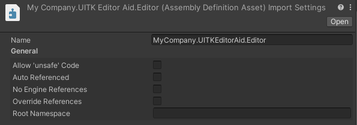
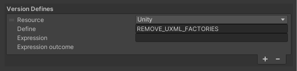

Embedding this package
Sometimes, it's needed to embed this package inside another one, especially when publishing to the Asset Store. We recommend the following steps to avoid collisions when your users have a reference to this package themselves. You can do these steps right every time you are about to publish your package; that way you can work with the most recent version of UITKEditorAid while developing. For these steps to work, your package must have its own code under its own asmdefs.
1. Generate new file GUIDs
Unity uses unique ids stored in .meta files to track different assets. When there are two files with the same id, Unity will generate a new id for one of the files. This means that either your embedded UITKEditorAid or the user's copy of the package could lose its file ids. That in turn can cause confusion, problems with Version Control, and issues with the Package Manager.
It's better for your embedded copy of UITKEditorAid to already have new file GUIDs. An easy way of achieving this is to copy UITKEditorAid into your package while keeping an existing reference to UITKEditorAid in your working Unity project. The Editor will detect the duplicate file ids and print a bunch of warnings in the console about changing them to avoid duplication. It will also print a couple of errors about duplicate assemblies; these will be fixed in the next step.
2. Prepare the asmdef
Select the asmdef inside the Editor folder in your copy of UITKEditorAid in the Unity Editor. Change the asmdef's name to a unique one to avoid duplicate assemblies. The name is set in the inspector; you can also rename the file's name for clarity, but the inspector's field is the important part.
Set Auto Referenced to false in the asmdef's inspector. This will prevent users from depending on this code, and it'll save you from having to rename namespaces to avoid collisions. In your package's own assembly definitions, replace references to the original UITKEditorAid's asmdef with your copy.
Here's an image that shows how the asmdef's copy should look in the inspector. Replace MyCompany with your own brand or name.

3. Remove UXML support
We really recommend not using custom UI Toolkit elements with UXML inside packages, unless the package is intentionally sharing those elements with users. If you're able to use a custom element with UXML or the UI Builder, the users of your package are too. This can cause unintended dependencies on parts of your package, and it will pollute the user's UXML options with undocumented features that don't explain their origin.
UITKEditorAid has the ability to remove UXML support with a symbol define. If REMOVE_UXML_FACTORIES is defined, UXML related code will be removed. This symbol should only be defined for your copy of UITKEditorAid to avoid affecting user's packages. An easy way of doing this is to add a custom Version Define in your copy's asmdef's inspector. Set the Resource field to Unity and the Define field to REMOVE_UXML_FACTORIES; leave Expression empty.
This is how it looks in the inspector:

Usually, replacing UXML layouts that use custom elements with pure code is relatively easy, especially because you can still use USS. The benefits of removing these UXML uses from packages normally outweigh the cost. If you really need to use UITKEditorAid elements with UXML, please rename the package's namespaces to avoid collisions, as UXML only uses namespaces and ignores assembly names for identifying elements.